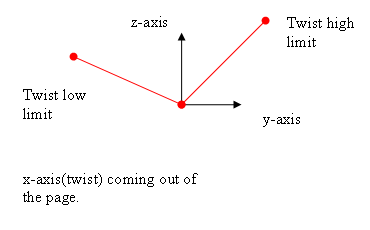
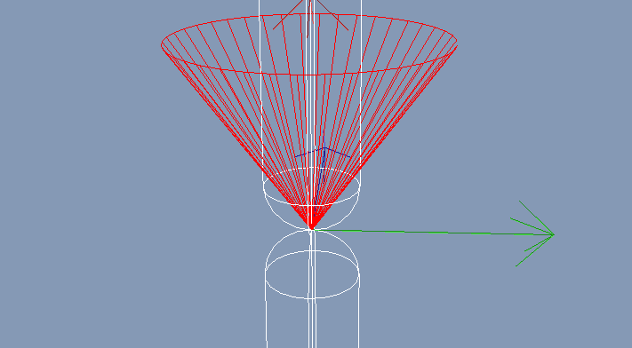
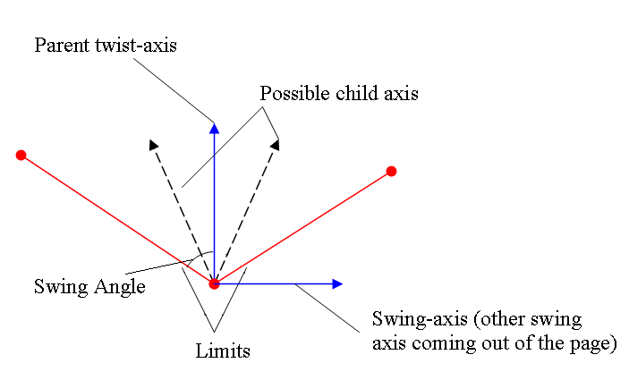

Limits on the 1DOF twist and the 2DOF swing motions are configured separately; therefore, unlike the linear case, two limit constraints can be active on angular DOFs.
Also unlike linear, each DOF has its own separate maximum limit parameter - angles in this case. As with the linear radius parameter, they are specified as maximum angles measured symmetrically on both sides of the zero angle so that the full angular separation between the limits is twice the specified angle.
The twist limit is a little different than the
swing limits, specified using a pair of angles rather than just a
single radius. This allows the limit orientations to be nonsymmetrical
around the twist axis, unlike the swing axis.

To visualize the affect of the limits, it is best to consider them with respect to a particular axis, such as the z-axis. In the diagram above, the child frame and parent frame are aligned. When the joint twists, the z-axis can rotate around the twist axis, but only as far as the limits (red lines).
//Set a hard twist limit, which limits the twist angle to twistLowLimit < twistAngle < twistHighLimit
d6Desc.twistMotion = NX_D6JOINT_MOTION_LIMITED;
d6Desc.twistLimit.low.value=NxMath::degToRad(twistLowLimit); //d6Joint angles are specified in radians.
d6Desc.twistLimit.low.damping=0.0f;
d6Desc.twistLimit.low.restitution=0.0f;
d6Desc.twistLimit.low.spring=0.0f;
d6Desc.twistLimit.high.value=NxMath::degToRad(twistHighLimit);
d6Desc.twistLimit.high.damping=0.0f;
d6Desc.twistLimit.high.restitution=0.0f;
d6Desc.twistLimit.high.spring=0.0f;
The table below lists all five swing limit possibilities with suggested their names:
| Swing1 |
Swing2 |
Limit
Name |
| limited |
limited |
(elliptic) swing-cone limit |
| limited |
free |
swing1 limit |
| free |
limited |
swing2 limit |
| limited |
locked |
zero-swing2 joint with swing1 limit |
| locked |
limited |
zero-swing1 joint with swing2 limit |
swing-cone limit:
If both swing DOFs are limited, then the
limit surface geometry is a cone centered on the principal axis of the
parent.
The principal axis of the child is constrained to stay inside the
parent-fixed cone.

In the above screen shot, the cone is represented in red. The principal child axis (x-axis) is a red arrow near the center of the cone; it is constrained to lie within the cone.
If both parameters specifying the maximum swing angles are equal, then the cone is circular. Generally, however, the cone has an elongated elliptical shape.
The maximum swing angles may be set between 0 and 180°.
Avoid cases where one swing limit angle is much smaller than the other as this results in an extremely elongated (highly eccentric elliptic) swing cone limit which may cause problems in simulation (the small swing DOF could be locked instead).
//Limit motion on the swing axis to lie within the elliptical cone specified by the
//angles swing1Limit and swing2Limit, relative to the parent frame.
d6Desc.swing1Motion = NX_D6JOINT_MOTION_LIMITED;
d6Desc.swing1Limit.value=NxMath::degToRad(swing1Limit);
d6Desc.swing1Limit.damping=0.0f;
d6Desc.swing1Limit.restitution=0.0f;
d6Desc.swing2Motion = NX_D6JOINT_MOTION_LIMITED;
d6Desc.swing2Limit.value=NxMath::degToRad(swing2Limit);
d6Desc.swing2Limit.damping=0.0f;
d6Desc.swing2Limit.restitution=0.0f;
single-swing limit:
If only one swing DOF is limited and the other is left free, this is interpreted as a limit surface in the shape of a double cone aligned with the free swing axis of the parent frame. The principal axis of the child is constrained to be excluded from the double cone.
If the other swing DOF is locked rather than left free, then swing sphere reduces to a circle and the single swing limit is just a segment of the circle located on the specified swing limit angle either side of zero.

d6Desc.swing1Motion = NX_D6JOINT_MOTION_LIMITED;
d6Desc.swing1Limit.value=NxMath::degToRad(parent->swing1Limit);
d6Desc.swing1Limit.damping=0.0f;
d6Desc.swing1Limit.restitution=0.0f;